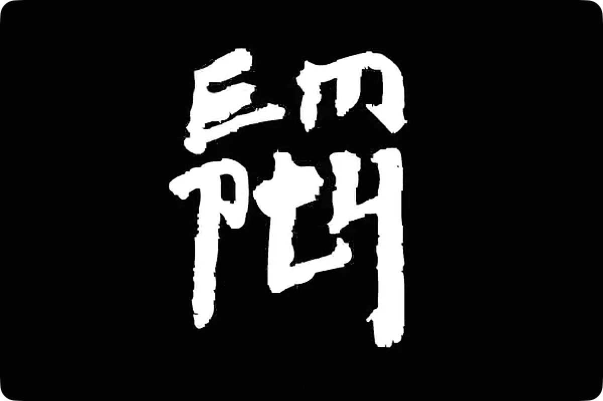

Working Draft
Interliteral
The work that ushered me into writing with computation was first characterized by some sense of the significnt and affective possibilities that may arise from exposing and exploiting certain relationships between words and their constituent elements. When language is transcribed or otherwise represented graphically, in English, we call these constituent elements ‘letters’ and we take them to be language’s fundamental constituent elements: its atoms. This is, of course, a simplification. But it is one that has traction for anyone literate and it has been disproportionately reinforced, if not hypostatized by the still predominant Western, now Global, regime of computation.
Later, my work went on to experiment with translating from one spatial arrangment of letters to another. In the departure arrangement, the letters would be the constituents of one set of words; in the destination arrangement, letters from the same set or literal vocabulary would be moved or replaced to become the constituents of a different set of words. I characterized the processes that moved from one arrangement to another as ‘transliteral.’ The identities of the letters transcended the distinct arrangements and also any transitional arrangements in the shift from one readable state to another.
But I studied Chinese, and the graphic representation of languages in the sinosphere does not make use of graphic linguistic ‘atoms’ that neatly correspond with the Roman letters to which most of the literate world has become accustomed. When working on a major project, riverIsland, bringing together Chinese poetics with a personal poetic project that shared these poetics at the level of short lyric descriptions of place, I began to think about processes that would be able to transate from one system of literal transcription to another. From Roman letters to Chinese characters.
Whereas my transliteral processes worked with on set of ‘atomic’ letters, Roman letters, the processes I came to call ‘interliteral’ had to translate from on set of letters to another, from one atomic ‘table of elements’ to another.
In transliteral process the letters retain their integrity. They move or they are replaced. They retain the same kinds of relationships to words they constitute at any static point in the process. This is impossible with respect to what I am calling ‘interliteral’ processes. The only commonality, with repect to either the letter themselves or the differently constituted ‘words’ that they represent is graphic. Thus an ‘interliteral’ translation is a graphic translation.
For riverIsland I made an animation – triggered at nodal points within the large project – with interliteral translations. Here is the animation:
I made this, around 1999, with an early vector graphics morphing program, and I did so as an amateur (most noticeable is my non-handling of counters in those Roman glyphs that have them) but with a degree of sophistication in that, for example, I treated Chinese calligraphic elements seperately, mapping them so that they morphed to particular letters.
Below are the ‘keyframes’ in the animation’s sequence…




The ordering of these keyframes and the repetition of the regular script character was intentional, and intentionally a compromise in that, in principle, a graphic morph from any of the keyframes to any other was possible. The sequence is conceived as a loop so that the morph from Cursive script (last keyframe) to Regular script (first keyframe) should be read in the figures above and it is, in fact, rendered into the animation.
The no-font glyphs and Square Words keyframes require extra commentary.
In the 1990s, I was already aware that what I now think of as the ‘regime of computation’ had been historically determined with an Anglo-American structuration. With respect to the localization and internationalization of computer systems (though much good work was underway), non-alphabetic scripts were, at the time, basically being ‘patched into’ operating systems that had a modularity (a kind of textual atomic structure) built on Roman fonts sets and, initially, on ASCII. In a critical art gesture, I wanted to point to this structural and ideological bias by point out the disjunctures of transcription to which non-alphabetic cultures were subjected, unless they created and installed ‘extra resources,’ such as fonts that needed to be handled in nonstandard manners by special software. I do not think that I did a good enough job of explaining this at the time and it is likely that any potential effects of the gesture were mostly lost.
[ The Text from Programmatology: ]
The atomic structure of written language and, I would argue, language-as-such differs in the two centers of ‘language and civilization.’ (I lean heavily and happily on Derrida in taking this view.) These differences are translated to digital media because linguistic structure itself — not simply linguistic ‘data’ — is transcribed by the entire historical process of digitization, taken to include the design of computing systems and data structures, not merely the actual transcription of cultural objects into bits and bytes. Basically, our programmatological systems reflect their derivation from an alphabetic system of linguistic inscription. Thus, I can easily use existing programming systems to manipulate western language in ways which correspond to encoded structures which are approximately ‘faithful’ to the language. It is easy to refer to letters as constituent of words, for instance. By contrast, it would be difficult, using existing systems in a straightforward way, to refer to the constituents of Chinese characters. Inevitably, in the first instance, while developing ideas and programs for text manipulation, I have taken advantage of the encoded structures of western language. I remain sharply aware that I am complicit with a privileged symbolic structure in doing so, recognizing that digitization could have been very different, commensurate with characters rather than letters. A recognition of this problematic underlies my most recent finished piece, riverIsland, which might otherwise be read as some sort of transcultural pastoral/lyric poetic exercise.
Imports etc.
const sharedHtml = await fetch("inapm0_shared.html").then(r => r.text())
const parser = new DOMParser()
const doc = parser.parseFromString(sharedHtml, "text/html")
const scripts = doc.querySelectorAll("script")
// css is the text/html block (id=55)
const cssScript = [...scripts].find(s => s.type === "text/html" && s.textContent.includes("faded-word"))
const cssEl = document.createElement("div")
cssEl.innerHTML = cssScript.textContent.trim()
document.body.appendChild(cssEl)
const css = cssEl
// nbs is the text/javascript block (id=43)
const nbsScript = [...scripts].find(s => s.type === "application/vnd.observable.javascript" && s.textContent.includes("function nbs"))
const nbsFn = new Function("Generators", "html", "MutationObserver", `${nbsScript.textContent.trim()}; return nbs;`)
const nbs = nbsFn(Generators, html, MutationObserver)
display("✅ css and nbs loaded from local file")import define from "https://api.observablehq.com/@shadoof/inapm0_shared.js?v=4"
import {Runtime, Library} from "npm:@observablehq/runtime@5"
const sharedRuntime = new Runtime(new Library())
const sharedModule = sharedRuntime.module(define)
const css = await sharedModule.value("css")
const nbs = await sharedModule.value("nbs")
display(css)
import define from "https://api.observablehq.com/@shadoof/inapm0_shared.js?v=4"
import {Runtime, Library} from "npm:@observablehq/runtime@5"
const sharedRuntime = new Runtime(new Library())
const sharedModule = sharedRuntime.module(define)
const css = await sharedModule.value("css")
const nbs = await sharedModule.value("nbs")
display(css)